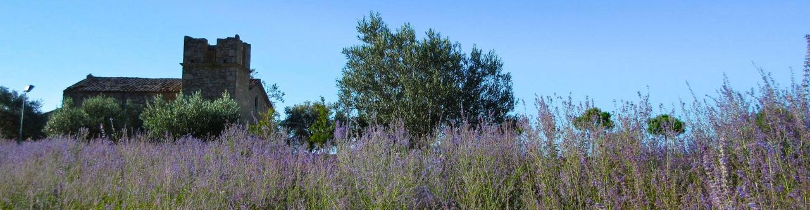

Ruta · Platja d'Aro
Itinerari llarg, amb força desnivell i trams de via asfaltada per descobrir les traces dels antics pobladors i els canvis del paisatge que s'ha donat a l'últim segle. Gaudirem del romànic, de…